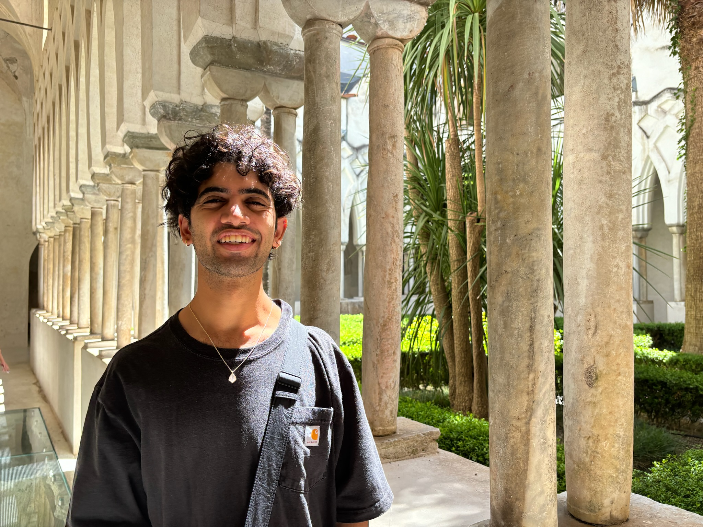

Chinmaya Andukuri

I'm a researcher and engineer focused on building AI systems that understand people. Recently, this has taken the form of improving user simulators built on language models (LMs).
I'm currently a research scientist at Collinear AI, working on post-training agents in increasingly complex environments. Previously, I worked on LM bootstrapping and self-improvement as an undergraduate in Stanford's Computation & Cognition Lab, advised by Noah Goodman and Jan-Philipp Fränken. While at Stanford, I received a B.S. in Mathematical and Computational Science. I'm currently on leave from my M.S. in Computer Science.
You can contact me at: chinmayaandukuri [at] gmail [dot] com.
X / GitHub / Google Scholar / CV / LinkedIn / HuggingFace
Publications and Preprints
STaR-GATE: Teaching Language Models to Ask Clarifying Questions
Chinmaya Andukuri*, Jan-Philipp Fränken, Tobias Gerstenberg, Noah D. Goodman
equal contribution.
Conference on Language Modeling (COLM), 2024.
Projects
FasterDecoding/REST
Fixed PyTorch errors and byte-level bugs in Rust so REST can serve modern language models and large tokenizers (e.g., Llama 3). 2024.
printllama
Investigating language models' ability to patch buggy code with the help of print statements, plus a new code evaluation dataset, humaneval-patch. 2024.
ast-bugfactory
Using abstract syntax trees to programmatically generate buggy code for analysis and evaluation. 2023.
Blog
How much does your user simulator scaffolding matter?
Comparing inference scaffoldings for simulating users, November 17, 2025.
Invariance of state-dependent baselines in Vanilla Policy Gradient
Proof of baseline invariance in RL, October 8, 2025.
Notes on gradient of matrix product in neural networks
Handwritten derivation of gradient of matrix product as it appears in backpropagation, December 13, 2025.
manipulativeLMs
Studying manipulation and social reasoning in language models, including experiments, a PDF write-up, and code, December 8, 2023.